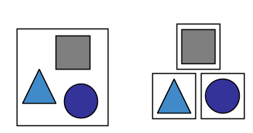
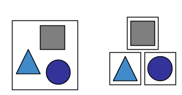

Normal application that try to be too many things at once, i.e.
I love it, there is only one application to deploy and monitor in production. I have enough time for coffee and cigarets
I can create new client, initialise current account and credit card, calculate the risk and score, transfer referal bonus and run 3 batches in single ACID transaction. Amazing!!!
The credit team ask me to add new credit score. I found there is already table SCORE. I'll just add 3 new columns to the other 56 and its done. Fantastic, our 5 years old app, already have tables for everithing.
Well done Monolith has many advanteges over the distributed by nature Microservices
With great power comes great responsibility
Normal application focused on single business context or process
It’s extremely important to achieve loose coupling between services, otherwise you will easily end up with a distributed monolith.
The fallacies of distributed computing are a set of assertions made by L Peter Deutsch and others at Sun Microsystems
Easy to implement, hard to scale
Easy to implement, scales well
Its a Messaging organised arround business recognised events
What is the payload of REST is well known, but what should be the payload of an event?
Easy to implement, scales well, not suitable for every case